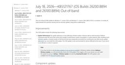

ITmedia エンタープライズ「セキュリティ」 最新記事一覧
https://www.itmedia.co.jp/enterprise/
ビジネスを革新するIT部門向け実践情報サイト
フィード
AI作成メールのクリック率は人間と同等に 年1回のセキュリティ教育では防御困難か
ITmedia エンタープライズ「セキュリティ」 最新記事一覧
Adaptive Securityは、生成AIの普及によって変化するメール攻撃の最新動向を発表した。AIによる精巧なフィッシングやビジネスメール詐欺、ディープフェイクなどが拡大しており、従来の技術的対策に加え、継続的な教育とヒューマンリスク管理の重要性を指摘している。
2日前

Windows 11、Dell製PCの不具合を修正する緊急パッチを配信 自動配信の条件と手動の導入手順は？ 2
2
ITmedia エンタープライズ「セキュリティ」 最新記事一覧
Microsoftは、Windows 11（25H2/24H2）向けに緊急更新プログラム「KB5121767」を公開した。Intel IPF搭載のDell製PCなどで生じていた性能低下や更新制限を解消する。自動配信やオプション更新から入手可能だ。
2日前
予定表招待「はい」で情報流出 Geminiを狙う攻撃の手口 2
ITmedia エンタープライズ「セキュリティ」 最新記事一覧
Kasperskyは、Geminiを狙うプロンプトインジェクション攻撃の研究結果と対策を紹介した。攻撃シミュレーションでは、予定表招待やSMSに隠した命令でGeminiに家の窓を開けさせたりZoom通話を始めさせたりできた他、長期記憶を汚染して別の端末にまで影響を広げる手口が示された。
2日前
2050年5月13日の“不審な予定”に要注意 M365カレンダーを悪用する新マルウェア 3
ITmedia エンタープライズ「セキュリティ」 最新記事一覧
Group-IBは、Microsoft 365のカレンダーを悪用する新マルウェアを確認したと発表した。2050年5月13日の予定を隠れみのに指令を受信したり搾取したデータを送信したりするという。
3日前
AIを悪用した攻撃、どう対抗する？ EDR導入の“次”にやるべきこと 4
ITmedia エンタープライズ「セキュリティ」 最新記事一覧
ランサムウェアやサプライチェーン攻撃が中堅・中小企業にも及ぶ中、国内のEDR市場は前年度比13.3％増と2桁成長を続ける。中堅・中小企業にも普及する一方で、高度なAIツールを悪用したサイバー攻撃対策にはEDR導入だけでは十分ではない。
3日前
サイバー攻撃17％増 生成AIプロンプト「26件に1件」が高リスク 4
ITmedia エンタープライズ「セキュリティ」 最新記事一覧
Check Pointが2026年6月の世界サイバー脅威動向を公表した。攻撃件数は前年同月比17％増と広範囲で増加し、ランサムウェアでは設立1年足らずの新興グループが首位に立った。生成AI利用に伴う情報流出リスクも明らかになった。
3日前
ニチレイへのサイバー攻撃はなぜ起きた？ 「たまたま選ばれる」被害の構造 5
ITmedia エンタープライズ「セキュリティ」 最新記事一覧
ニチレイがサイバー攻撃を受け、冷凍食品の出荷や冷蔵倉庫の入出庫が止まり、影響は取引先にも広がりました。誰が、なぜ攻撃するのでしょうか。どうすれば防げたのでしょうか。
4日前
Microsoft、7月の月例更新で約570件を修正 悪用済みゼロデイ2件にまず対応を 1
ITmedia エンタープライズ「セキュリティ」 最新記事一覧
Microsoftは、2026年7月の月例更新で約570件の脆弱性を修正した。AI活用で発見件数が急増し、ゼロデイ3件への対応と効率的な脆弱性管理の必要性を示した。
8日前
Entra IDの標準認証がパスキーに SMS認証が使えなくなるのはいつ？ 2
ITmedia エンタープライズ「セキュリティ」 最新記事一覧
MicrosoftはEntra IDの標準認証方式をパスキーに変更する。AIを利用した攻撃の高度化を受け、SMS認証と音声認証への依存を減らす狙いだ。両認証はいつまで使えるのか。
8日前

ランサムウェア犯も失敗したくない ホワイトハッカーが明かす“身代金ビジネス”の実態
ITmedia エンタープライズ「セキュリティ」 最新記事一覧
ランサムウェア被害企業は「支払うか、拒否するか」という難しい判断を迫られるが、その交渉の舞台裏では、被害企業だけでなく攻撃者側にも交渉に失敗したくない事情がある。ホワイトハッカーが解説する“攻撃者の論理”を知れば、インシデント対応の見方が変わるかもしれない。
11日前
多要素認証も飛び越えるフィッシング iOS 27の"新たな防波堤"
ITmedia エンタープライズ「セキュリティ」 最新記事一覧
利用者自身に操作をさせて多要素認証をすり抜けるフィッシングが猛威を振るっている。こうした中、Appleが2026年秋公開予定の「iOS 27」で、人の心理を突く攻撃に対抗する新たな仕組みを用意していることが分かった。
11日前
Windowsアップデートは「3日以内」に完了へ IT部門が工数をかけずに乗り切る方法は？
ITmedia エンタープライズ「セキュリティ」 最新記事一覧
AIの急速な発展によって脆弱性が「数時間」単位で悪用される中、MicrosoftはWindows更新プログラムを3日未満で全社展開する新基準を推奨。IT部門が工数をかけずにこれを乗り切るための対応策も提示している。
11日前
バックアップが一躍、経営課題に 「単なるデータ保護手段」から“地位向上”の理由
ITmedia エンタープライズ「セキュリティ」 最新記事一覧
災害やシステム障害からデータを守るバックアップ。バックアップ市場拡大の背景には、バックアップの位置付けの変化があるとITRは指摘する。では、IT部門がバックアップ製品を選ぶポイントはどのように変わるのか。
15日前
セキュリティ枠組みの選び方を変えた「4つの変化」とは IDCが選定の指針を公表
ITmedia エンタープライズ「セキュリティ」 最新記事一覧
情報セキュリティの枠組み選定は「定番を選んで終わり」ではなくなった。IDCが企業向けの選定指針を公表した。同社が「根本から変わった」と指摘する選定の前提とは何か。
15日前
アクセンチュア、重要インフラのセキュリティ事業強化へ またもや3社買収の狙いは？
ITmedia エンタープライズ「セキュリティ」 最新記事一覧
アクセンチュアは重要インフラ向けサイバーセキュリティを手掛ける3社を買収する。これまで多くのセキュリティ企業を買収してきた同社が、今回の買収によって対応を一層強化するセキュリティ課題とは何か。
18日前
スマホはもはや「実印」？ パスワード870件分の警告をAIはどう救うのか
ITmedia エンタープライズ「セキュリティ」 最新記事一覧
詐欺対策アプリの導入からマイナンバーカードの利用まで、親のスマホの面倒をみるうちに見えてきたのは「スマホが実印に近づいている」という現実です。この状況で頼りになりそうな、AIを使ったパスワード管理の新機能とは何でしょうか。
18日前
「AIの暴走を止められない」 CISO座談会で見えたAIセキュリティの限界
ITmedia エンタープライズ「セキュリティ」 最新記事一覧
企業がAI活用を急ぐ中、従来型の防御モデルでは対応しきれないリスクが浮上している。Darktraceが実施したCISOらとの座談会から見えてきた、AIエージェントの暴走やシャドーAIのまん延など5つの主要課題とは。
18日前
世界のランサムウェア攻撃、4217件に データ流出規模の上位5件を占めた国は？
ITmedia エンタープライズ「セキュリティ」 最新記事一覧
Comparitechは、2026年上半期のランサムウェア攻撃が世界で4217件に達し、同社調査で過去最多を記録したと報告した。企業と政府、医療で増え、米国は1832件で最多ながら前期比8％減、QilinとThe Gentlemenの活動が目立った。
18日前
たった1件の不備でマイナス1万点 AIの物量攻撃に耐える“基礎の強度”
ITmedia エンタープライズ「セキュリティ」 最新記事一覧
激変するセキュリティのランドスケープと、AIの物量攻撃に対抗する実務アプローチを解説。漫然とした基礎対応から脱却し、対策の“練度”を高め、ITとセキュリティの運用を組織的に統合していく必要性を説く。
19日前
Google Chromeで「Perplexity」を偽装する悪質拡張機能が発見 Microsoftが警告
ITmedia エンタープライズ「セキュリティ」 最新記事一覧
MicrosoftはAIサービスを装う悪質な拡張機能を確認し、Googleに報告後削除されたことを明らかにした。利用者には導入元や権限の確認を促した。
21日前
KDDIの最大1422万件の情報漏えい事件 その裏には陸自USB問題と同様に中国の影？
ITmedia エンタープライズ「セキュリティ」 最新記事一覧
KDDIで発生した最大1422万件に及ぶ情報漏えい。その背後には、単なる脆弱性悪用では片付けられない攻撃者の狙いが見え隠れしている。ダークWebやOSINT（公開情報調査）から事件を追跡し、流出データの行方や政府系サイバー攻撃との接点、今後想定されるリスクを専門家とともに解説する。
23日前
ダークウェブ分析の韓国S2Wが日本法人設立、今日本で事業注力する理由
ITmedia エンタープライズ「セキュリティ」 最新記事一覧
韓国のセキュリティ企業S2Wは、日本法人設立を発表した。巧妙化するサイバー攻撃に対し、被害発生前にリスクを把握する「プロアクティブなインテリジェンス」の必要性が高まる中、日本市場での営業・サポート体制を本格化させる。
23日前
「ランサムウェア」侵入手順を徹底解説 もう知ったかぶりからは卒業しよう
ITmedia エンタープライズ「セキュリティ」 最新記事一覧
“ランサムウェア”と聞くと、ある日突然データが暗号化されると思いがちだ。しかし攻撃者は、そのはるか前から静かに侵入し、社内を調査し、重要データを探し出している。泥棒の犯行になぞらえながら、ランサムウェア攻撃の全体像を分かりやすく解説しよう。
23日前
「大企業を恐れず、機会にフォーカスせよ」Okta CEOが説くAI時代の勝機とセキュリティ
ITmedia エンタープライズ「セキュリティ」 最新記事一覧
AIエージェントの普及が進む中、企業のシステムへの侵入経路は急激に広がっている。アイデンティティ管理サービスを提供するOktaのCEOが来日し、この課題にどう向き合うべきかを語った。
24日前
日経225企業の96％が情報漏えいを経験 最も漏えい率の高い業界は
ITmedia エンタープライズ「セキュリティ」 最新記事一覧
ある調査によると、日経225構成企業のうち96.4％で、過去3年間に情報漏えいが確認された。漏えい率は業界によって大きな差があり、最も高い業界の漏えい率は最も低い業界の23倍を超えていた。最も漏えい率が高いのはどの業界か。
25日前
「Claude Mythos」が突きつける、IT業界の転換点 われわれが置かれている状況を「姉歯事件」から読み解く
ITmedia エンタープライズ「セキュリティ」 最新記事一覧
Claude MythosがもたらすIT業界のパラダイムシフトを、建築業界の「姉歯事件」になぞらえて解説。脆弱性が放置されてきた今までから、安全性確保が義務となる成熟した業界への転換期を説く。
25日前
機械より人をだます方が早い 巧妙化する「二段階フィッシング」にご注意
ITmedia エンタープライズ「セキュリティ」 最新記事一覧
手品師が心理誘導で“魔法”を見せるように、攻撃者もまた、人間の心理の隙を突く手法で巧妙な攻撃を仕掛けてきます。「二段階式フィッシング」や「ClickFix」など、システムでの検知が困難な人を狙う脅威について解説します。
25日前
「USBメモリの全面禁止」ってホントに有効？ 須藤あどみんが指摘する本質と最新脅威
ITmedia エンタープライズ「セキュリティ」 最新記事一覧
インシデント対策の「USB全面禁止」は本当に効果があるのか。バーチャル情シス・須藤あどみん氏が、現場を縛るだけの“思考停止ルール”のリスクを一蹴。データの「俯瞰図」を使った制御や教育など、ビジネスを安全に加速させる実践的ガバナンス論を提示する。
1ヶ月前
終わらない「レガシー延命」が命取りに AI時代のサイバー危機にセキュリティ機関が声明
ITmedia エンタープライズ「セキュリティ」 最新記事一覧
ファイブアイズは、AIの急速な発展でサイバーリスクが月単位で激変しているとして共同声明を公表。もはや技術課題ではなく経営リスクであると指摘し、経営層に即時の対応と防御強化を求めた。
1ヶ月前
KDDIメール基盤から最大で1422万件漏えい ニフティやBIGLOBEなど6社に波及
ITmedia エンタープライズ「セキュリティ」 最新記事一覧
KDDIはISP向けメール基盤への不正アクセスを確認し、最大1422万件のメールアドレスとパスワードが漏えいした可能性が判明した。KDDIウェブコミュニケーションズ、ニフティ、BIGLOBEなどがパスワード変更を呼びかけ、調査と対応を続ける。
1ヶ月前